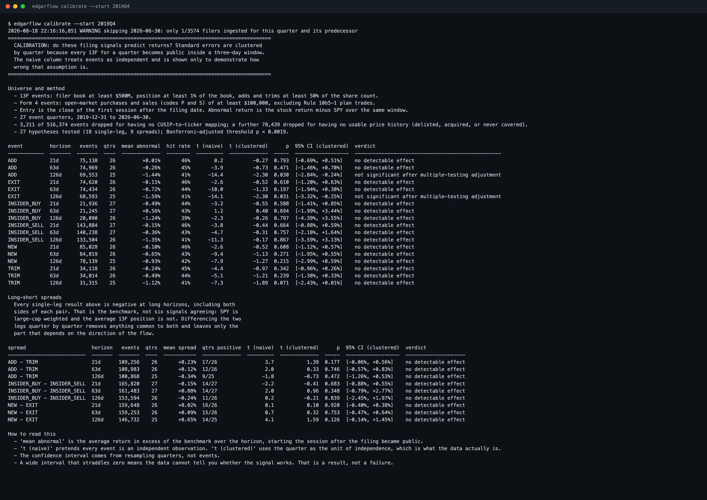
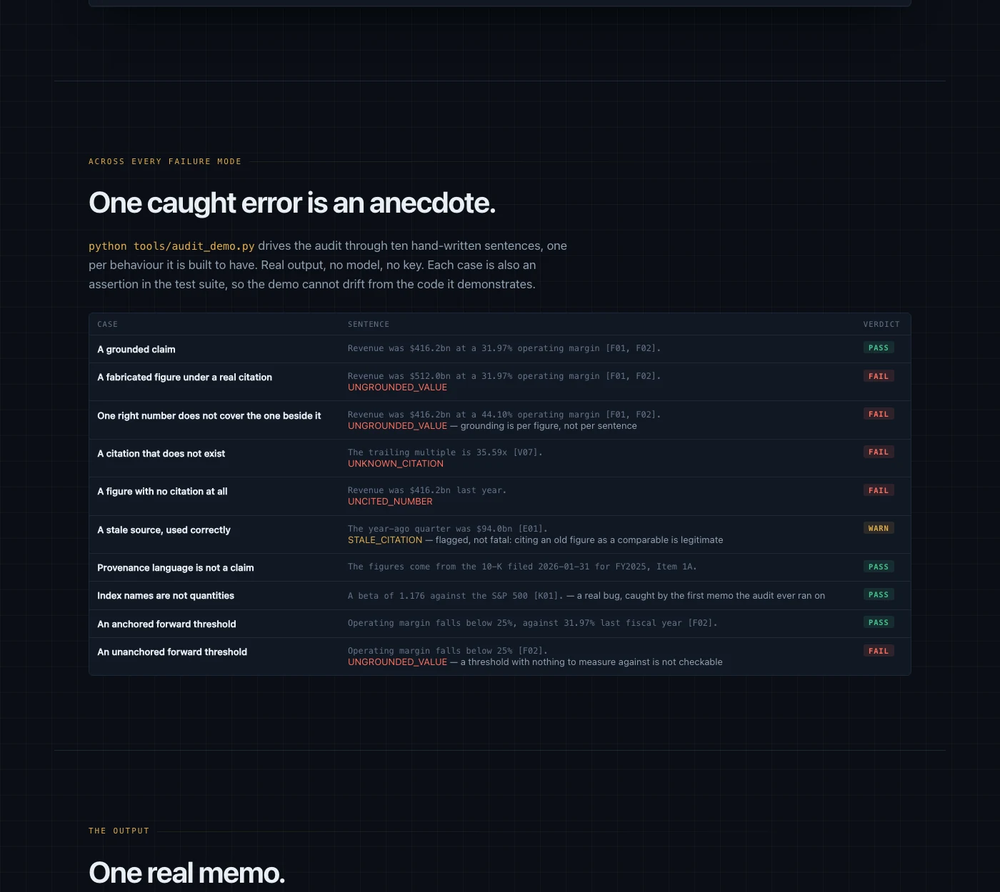

Tools built to
test their own claims.
Two research tools and four open-source pull requests. Each is built to produce a checkable answer — including when the answer is that there is nothing there.
SEC EDGAR institutional
and insider flow tracker
Institutional and insider flow rebuilt from raw SEC filings, then tested for predictive value.

Equity research agent
Ticker in, memo out. Every figure traceable to its filing, and a deterministic audit rejects the memo if it is not.

not_established field for claims the evidence cannot supportFour pull requests,
none merged yet
Found by reading the parsers, not by working the issue list. All four open, awaiting review.
| Project | Stars | Defect | Status |
|---|---|---|---|
| OpenBB | 72k | Form 4 parser overwrote its footnote lookup table with one row's text, so every later transaction in a filing inherited the first row's footnote | Open · #7642 |
| microsoft/qlib | 47.7k | Backtest exchange divided by the proportional fee rate, so any zero-cost run crashed on the first partially-funded buy order | Open · #2324 |
| ffn | — | Sharpe ratios silently not annualized for business-day, weekly and quarterly series — 0.0237 reported against a correct 0.3764 | Open · #322 |
| yfinance | — | Submitted fix | Open · #2949 |
Why the footnote bug matters. A Form 4 is filed within two business days of an insider trading their own stock. A 10b5-1 sale, a tax withholding and a discretionary sale are distinguished by exactly that footnote. Shipped since April 2025.
Each fix ships with regression tests verified to fail on the unpatched code and pass on the fix. The tractable issues on these projects already carry several competing PRs each.